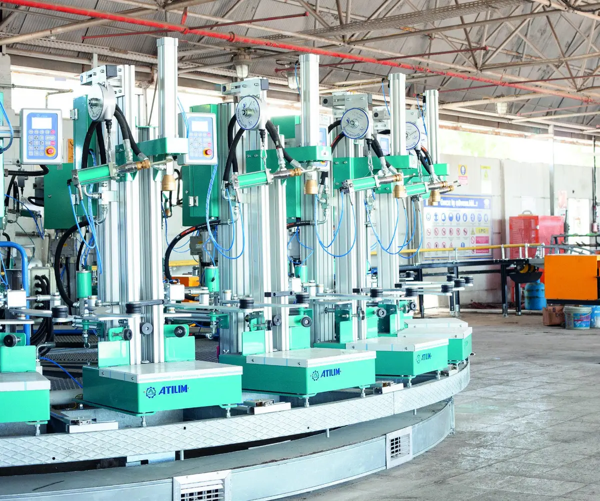
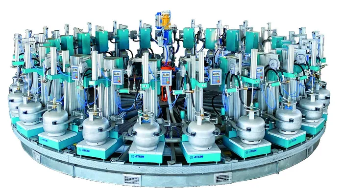
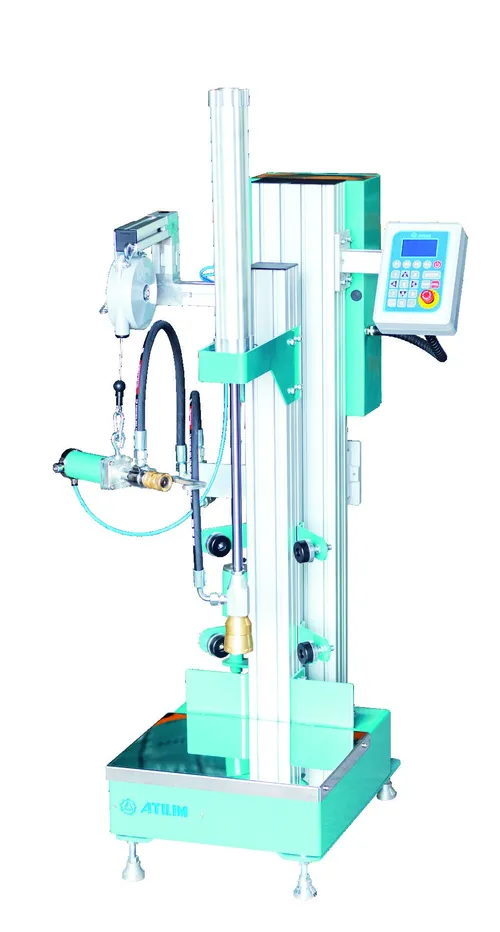
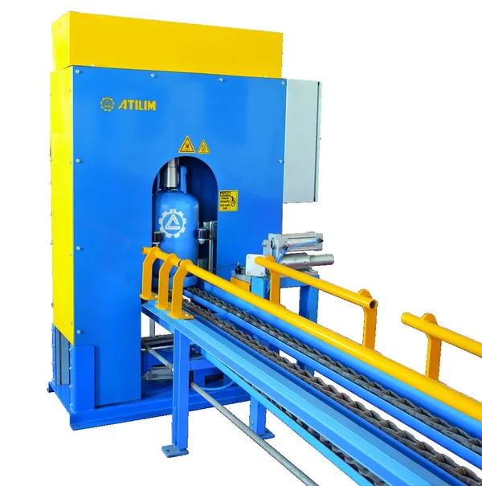
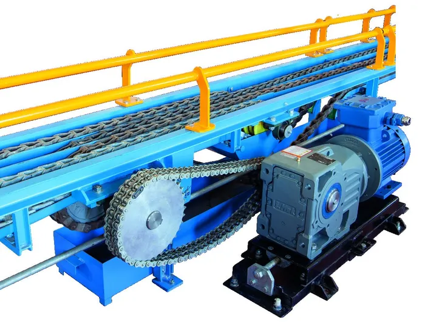
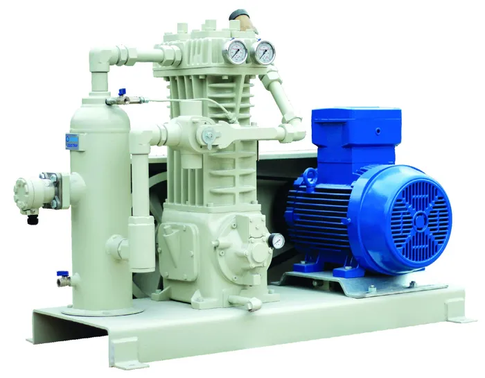

Serviços Novo
Montagem de linhas de enchimento de GPL
Solicitar proposta para uma linha de enchimentoO que fazemos
Linhas de enchimento de GPL
Carrossel de enchimento
Carrossel electrónico até 18 postos, com máquinas de enchimento com balança.
Transportadores
Transportadores de corrente e mecanismos de entrada e saída das garrafas.
Controlo e segurança
Verificação de peso, detecção de fugas, selagem da válvula e retirada de garrafas defeituosas.
Gás e utilidades
Compressores, bombas, tanques de GPL e redes de gás, ar comprimido e incêndio.







Aplicação e valor
Para quem e com que segurança
Dirige-se a distribuidoras de GPL e a unidades industriais que enchem garrafas.
- Linhas para garrafas de 10 a 15 kg e de 35 a 50 kg
- Capacidade dimensionada ao seu volume de enchimento
- Ventilação sob o carrossel, corte automático do gás em caso de incêndio e equipamento antideflagrante
Experiência
Capacidade e método
450 a 1 800garrafas por hora, conforme o carrossel
até 18postos de enchimento por carrossel
Valores de referência de um projecto-tipo. A capacidade final depende do número de postos e do tipo de garrafa. O equipamento é concebido segundo as directivas europeias aplicáveis.
Em três etapas
- Estudo e dimensionamentoCapacidade, tipo de garrafa e espaço disponível.
- Montagem e instalaçãoLinha, redes e ligações eléctricas para atmosferas explosivas.
- Ensaios e entrada em funcionamentoTestes, calibração das balanças e arranque acompanhado, com formação dos operadores.
Quer montar uma linha de enchimento?
Diga-nos a capacidade que procura. A equipa técnica prepara um estudo e uma proposta.